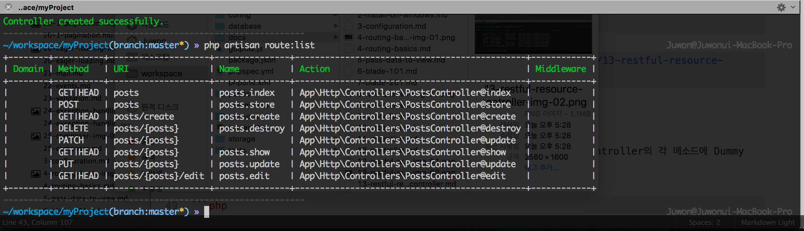
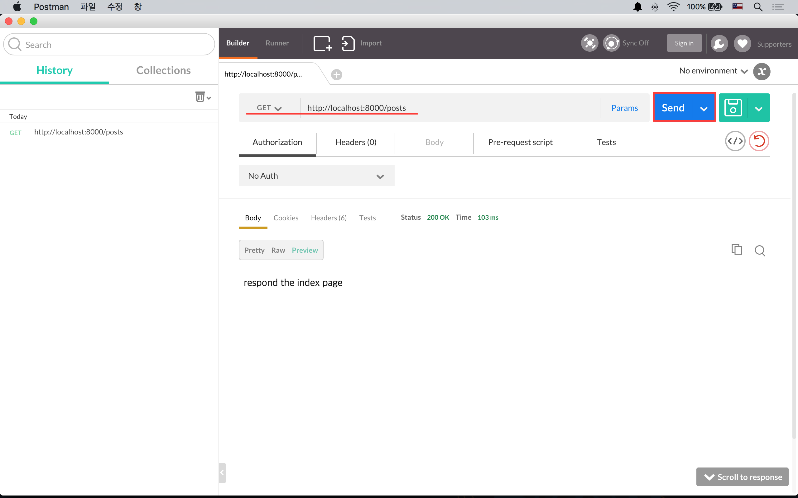

13강 - RESTful 리소스 컨트롤러
REST는 이 코스 범위를 넘어가는 내용이니, 시간 날 때 구글링을 통해서 공부하자. 모든 HTTP 요청 Url 엔드포인트에 대해서 IndexController@method 와 같이 연결하면 Route 정의만으로도 수백, 수천 줄이 될 수 있다. REST 원칙에 따라 리소스 이름으로된 Url 엔드포인트를 정의하고, @method 없이 컨트롤러에 연결시키는 것이 리소스 컨트롤러라고 이해하고 넘어가자.
RESTful Resource Route
아래는 Post 모델에 대한 Url 엔드포인트를 'posts'라 했을 때, REST 원칙에 따라 라라벨이 자동으로 생성해 주는 Url 엔드포인트와 PostsController의 메소드간의 연결을 표로 표현한 것이다.
| Verb | Endpoint | Method Override | Controller Method | Description |
|---|---|---|---|---|
| GET | /posts/ | index() |
Post 모델 Collection 보기 | |
| GET | /posts/{id} | show() |
id를 가지는 Post Instance 보기 | |
| GET | /posts/create | create() |
새로운 Post Instance 생성을 위한 폼 | |
| POST | /posts | store() |
새로운 Post Instance 생성 | |
| GET | /posts/{id}/edit | edit() |
id를 가진 Post Instance 업데이트 폼 | |
| POST | /posts/{id} | _method=PUT (x-http-method-override: PUT) |
update() |
id를 가진 Post Instance 업데이트 |
| POST | /posts/{id} | _method=DELETE (x-http-method-override: DELETE) |
delete() |
id를 가진 Post Instance 삭제 |
app/Http/routes.php에 posts 경로에 대한 resource 라우트를 정의하자. 그간 배웠던 get() 메소드가 아닌, resource()란 메소드를 쓰는 것에 유의하자.
Route::resource('posts', 'PostsController');artisan CLI 로 Route 목록을 확인해 보자.
$ php artisan route:list
# ReflectionException - Class App\Http\Controllers\PostsController does not existRESTful Resource Controller 만들기
artisan CLI 로 PostsController를 만들자. 이번엔 --plain 옵션이 빠진다.
$ php artisan make:controller PostsController --resource
# Route 목록을 다시 확인해 보자.
$ php artisan route:list
테스트
app/Http/Controller/PostsController.php 가 만들어졌는지 확인하자. PostsController의 각 메소드에 Dummy 반환값을 넣고 RESTful 라우트와 컨트롤러가 잘 동작하는지 확인해 보자.
class PostsController extends Controller
{
public function index()
{
return '[' . __METHOD__ . '] ' . 'respond the index page';
}
public function create()
{
return '[' . __METHOD__ . '] ' . 'respond a create form';
}
public function store(Request $request)
{
return '[' . __METHOD__ . '] ' . 'validate the form data from the create form and create a new instance';
}
public function show($id)
{
return '[' . __METHOD__ . '] ' . 'respond an instance having id of ' . $id;
}
public function edit($id)
{
return '[' . __METHOD__ . '] ' . 'respond an edit form for id of ' . $id;
}
public function update(Request $request, $id)
{
return '[' . __METHOD__ . '] ' . 'validate the form data from the edit form and update the resource having id of ' . $id;
}
public function destroy($id)
{
return '[' . __METHOD__ . '] ' . 'delete resource ' . $id;
}
}테스트를 위해 PostMan 크롬 확장 프로그램을 사용할 것을 권장한다. 이 문서의 표 대로 하나씩 대입해 보자. PostMan에서 GET을 선택하고 http://localhost:8000/posts, http://localhost:8000/posts/1, http://localhost:8000/posts/1/edit.

그럼, HTTP 요청 메소드를 POST로 바꾸고, http://localhost:8000/posts를 해보자.
TokenMismatchException
라라벨은 CSRF(Cross Site Request Forgery) 공격을 방지하기 위해 기존 데이터를 변경하는 행위, 즉, 신규 생성, 업데이트, 삭제 등의 행위에 대해서는 CSRF 토큰을 폼요청에서 제공해야 한다. 가령 PostsController@create 메소드에서 응답한 모델 생성 폼에서 숨은 필드로 _token 값을 제공해야 한다. 폼 요청을 받은 PostsController@store 메소드는 토큰의 유효성을 확인하고, 같은 세션일 경우, 즉, create()를 요청한 클라이언트와 store()를 요청한 클라이언트가 동일할 경우에만 store() 액션을 수행한다. 지금 우리가 PostMan을 통해서 테스트하는 행위 자체가 CSRF 공격이라 볼 수 있다.
우선 이번 테스트를 위해 CSRF 보호기능을 잠시 끄도록 하자. app/Http/Middleware/VerifyCsrfToken.php를 아래 처럼 수정한다.
class VerifyCsrfToken extends BaseVerifier
{
protected $except = [
'posts',
'posts/*'
];
}POST http://localhost:8000/posts가 정상 동작하는 것을 확인한 후, 이번에는 POST http://localhost:8000/posts/1 으로 요청해 보자. 또 에러가 날 것이다.
MethodNotAllowedHttpException
브라우저들은 PUT, DELETE 등의 HTTP 동사(==메소드)를 지원하지 않는다. 즉, 브라우저에서는 PUT, DELETE등의 요청을 할 수 없다는 얘기다. 그럼에도 불구하고, REST 원칙을 지키기 위해서 라라벨 뿐 아니라 대부분의 웹 프레임웍들이 메소드 오버라이딩을 사용한다. POST로 폼 전송을 하되 숨은 필드로 _method=PUT 등과 같이 "내 비록 POST로 요청하지만 이건 PUT 요청이오~" 라고 서버 프레임웍에게 힌트를 주는 방법이다.
http://localhost:8000/posts/1 로 PUT, DELETE 요청을 하기 위해서는 폼데이터로 _method=PUT, _method=DELETE 를 추가해 주어야 한다. PostMan에 Body라 써진 탭을 열고, form-data 에 Key:"_method", Value:"PUT"을 각각 입력한 후 다시 테스트해 보자.
참고 숨은 필드를 이용하지 않고 x-http-method-override: DELETE 와 같이 HTTP Header를 이용해서 메소드 오버라이딩을 할 수도 있다.
모든 테스트가 끝났으면, VerifyCsrfToken 클래스에서 예외 처리 했던 것을 원복 시키자.
class VerifyCsrfToken extends BaseVerifier
{
protected $except = [];
}